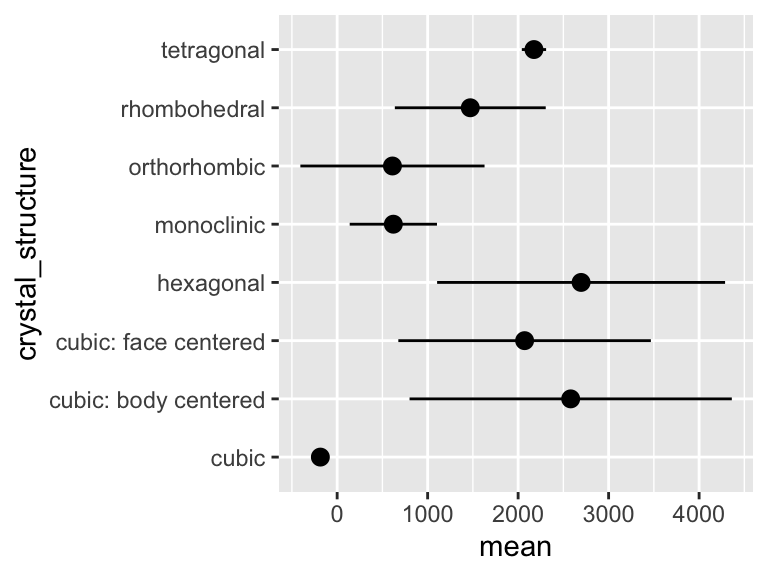

9 Writing
9.1 Captions
Components of a caption:
- Title - an overall description of the what is shown
- For each subplot:
- The type of plot (line plot, bar chart, etc.)
- Describe what is plotted as y vs x in words.
- Describe where the data is from.
- Describe what each bar, point, or error bar represents.
- If applicable, describe the number of independent samples or measurements (sometimes called “replicates”) that underlie a given geometric feature or summary statistic.
- Avoid abbreviations, but if you do use any, specify what they mean.
An example:
ggplot(
data = filter(alaska_lake_data, element_type == "bound"),
aes(y = lake, x = mg_per_L)
) +
geom_col(
aes(fill = element),
alpha = 0.5, size = 0.5, position = "dodge",
color = "black"
) +
facet_grid(park~., scales = "free", space = "free") +
theme_bw() +
scale_fill_brewer(palette = "Set1") +
scale_y_discrete(name = "Lake Name") +
scale_x_continuous(name = "Abundance mg/L)") +
theme(
text = element_text(size = 14)
)
Fig. 1: Carbon, nitrogen, and phosphorous in Alaskan lakes. A bar chart showing the abundance (in mg per L, x-axis) of C, N, and P in various Alaskan lakes (lake names on y-axis) that are located in one of three parks in Alaska (park names on right y groupings). The data are from a publich chemistry data repository. Each bar represents the result of a single measurement of a single analyte, the identity of which is coded using color as shown in the color legend. Abbreviations: BELA - Bering Land Bridge National Preserve, GAAR - Gates Of The Arctic National Park & Preserve, NOAT - Noatak National Preserve.